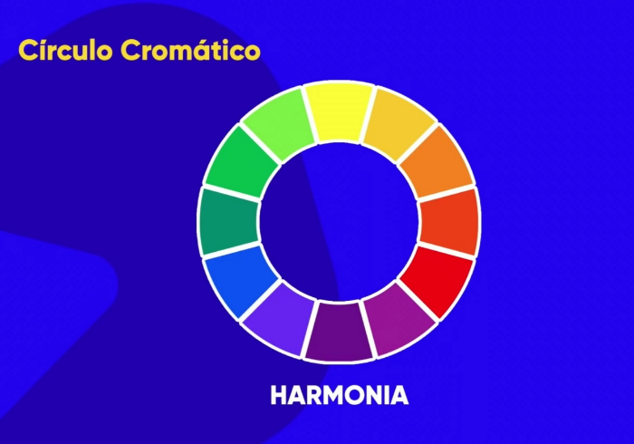

Círculo Cromático
O círculo cromático é uma paleta composta por doze cores, sendo elas:
- Três cores primárias: Não podem ser obtidas através de outras, como o amarelo, azul e vermelho.
- Três cores secundárias:Pela mistura das cores primárias, obtemos laranja, violeta e verde.
- Seis cores terciárias: Compostas pela mistura das cores secundárias.

Gerador de paletas Coolors
Clique no site e aperte a tecla (espaço para gerar uma nova paleta de cores).
Usando Círculo Cromático